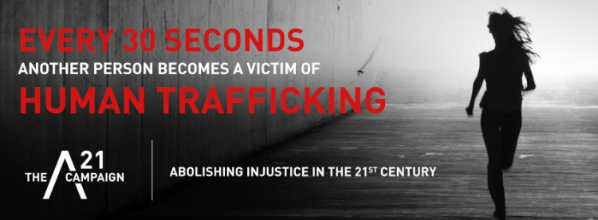

Trafficking Statistics
Categories of Human Trafficking
Right now over 27 MILLION people are victims of human trafficking, world-wide. The average age is 14 years old.
Categories of Human Trafficking
Actively participating in conjunction with A21.org, a non-profit organization whose mission it is to abolish injustice in the 21st Century, we believe that by working together an end can come to the modern day equivelancy of slavery. Human - Trafficking.
Through education, awareness and community involvement we strive to make our communities safer and more aware by working together.